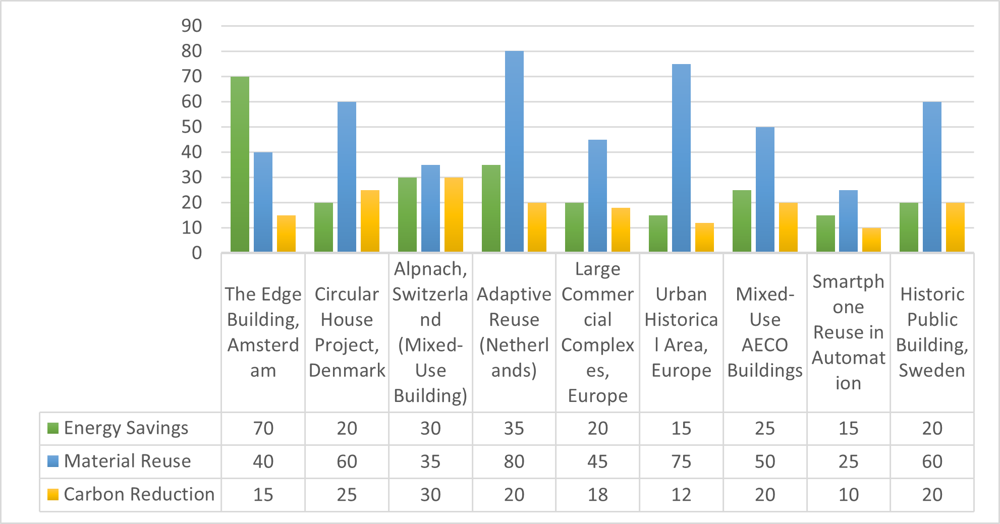
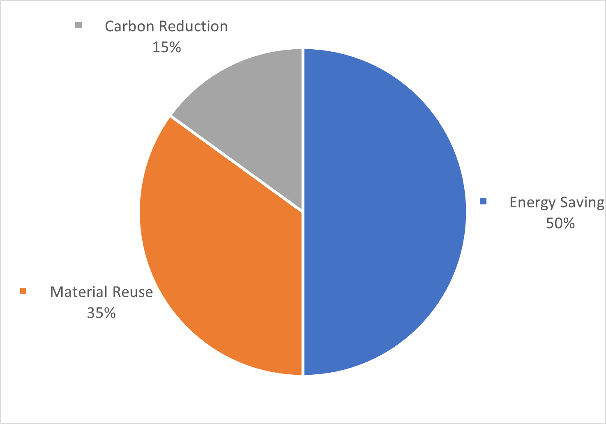

Validating a Digital Circular Economy Framework through Multi-Case Retrofit Analysis
![]()
Integrating Circular Economy principles into existing building retrofits offers substantial opportunities to reduce resource waste and improve operational efficiencies. This paper presents a multi‐case analysis of eight retrofit projects—spanning offices, residential complexes, and historical structures—to validate a digital integration framework that leverages Building Information Modeling, the Internet of Things, Artificial Intelligence, and Digital Twins. Our analysis demonstrates that retrofits employing this framework can achieve material reuse rates between 40% and 80% and energy savings from 15% to 70%. In addition to quantifying performance improvements, the study examines challenges such as stakeholder resistance, data fragmentation, and regulatory constraints, and discusses strategies for effective framework implementation. The findings offer a robust roadmap for scaling digital‐driven CE retrofits in the built environment.
Circular Economy, Building Retrofit, BIM, IoT, Material Reuse
1. Introduction
The built environment is one of the largest consumers of energy globally and is responsible for a significant share of greenhouse gas emissions [1], [2]. Traditionally, construction has followed a linear model—extract, build, use, and dispose—resulting in high levels of waste and resource depletion. In response to these challenges, the Circular Economy (CE) paradigm has gained traction as an alternative model that emphasizes waste minimization, resource recovery, and the extension of material lifespans [3], [4], [5]. CE approaches aim to close the loop by designing processes that enable the continuous reuse of resources, thereby reducing environmental impact and promoting sustainability.
While new construction projects have increasingly incorporated CE strategies, existing buildings—representing the majority of the built stock—present unique challenges for retrofitting. These structures are characterized by heterogeneous construction methods, outdated designs, and various regulatory and technical obstacles [6], [7]. Retrofitting such buildings requires careful consideration of material deterioration, heritage preservation, and occupant disruption. Consequently, effective CE retrofitting necessitates not only innovative design but also advanced technological solutions.
Digital technologies have emerged as critical enablers in addressing these retrofit challenges. Tools such as Building Information Modeling (BIM), the Internet of Things (IoT), Artificial Intelligence (AI), and Digital Twins facilitate detailed data collection, real-time monitoring, and predictive analysis, thereby improving decision-making and operational performance [8], [9], [10]. These digital solutions enable precise documentation of as-built conditions, simulation of retrofit scenarios, and continuous performance optimization after project completion.
Despite the theoretical promise of these digital technologies, empirical validation of integrated frameworks remains limited. This study addresses that gap by evaluating a comprehensive digital integration framework for CE retrofits through a multi‐case analysis. The framework is structured into four phases—Assessment, Planning, Execution, and Monitoring & Optimization—and is applied to eight diverse retrofit projects. The objective is to assess the framework’s performance, quantify its benefits in terms of material reuse and energy savings, and identify persistent challenges that may hinder broader adoption.
2. Methodology
2.1 Research Design
A multi‐case study approach was employed to evaluate the digital framework in a range of real-world retrofit projects. This design allowed for the collection of both qualitative and quantitative performance metrics across varied building typologies, thereby providing a comprehensive evaluation of the framework’s effectiveness [11], [12]. By comparing outcomes across multiple cases, the study identified recurring themes and validated the robustness of the framework under different conditions.
2.2 Case Selection
Eight retrofit projects were selected based on the following criteria:
- Diversity of Building Types: The sample includes commercial offices, residential buildings, and historical structures. This diversity ensures that the framework is tested under various scenarios and that the findings are broadly applicable [6], [13].
- Digital Tool Implementation: Each project integrated at least two digital solutions (e.g., a combination of BIM with IoT or Digital Twins) to support CE outcomes. This criterion guarantees that the framework is applied in a sufficiently digitalized context.
- Data Availability: Selected projects provided robust quantitative data (e.g., energy consumption, material reuse rates) as well as qualitative insights (e.g., stakeholder satisfaction, regulatory challenges). This comprehensive data set allowed for detailed comparative analysis.
2.3 Data Collection and Analysis
Data collection was carried out using a triangulation of methods:
- Document Review: Academic publications, industry reports, and official project documentation were analyzed to extract relevant performance data and qualitative insights.
- Performance Metrics: Quantitative data were gathered on key indicators such as energy savings, material reuse, and waste reduction.
- Comparative Synthesis: Data were aggregated into summary tables and charts to identify cross-case trends and validate the effectiveness of each phase of the digital framework [11].
The use of multiple data sources enhanced the validity of the findings and provided a robust basis for analysis.
3. Case Studies and Comparative Analysis
This section provides a detailed overview of the eight retrofit projects analyzed in this study. Table 1 below summarizes the key characteristics, including building type, digital technologies employed, CE outcomes, and encountered challenges.
| Case Study | Building Type | Technologies Used | Key Outcomes | Challenges | Metrics |
|---|---|---|---|---|---|
| The Edge Building, Amsterdam [8] | Commercial Office | BIM, IoT, Digital Twins | 70% energy savings, enhanced occupancy comfort | Minimal significant challenges | Energy Savings: 70% |
| Circular House Project, Denmark [6] | Residential Apartments | BIM | 60% material reuse, 25% carbon reduction | Stakeholder engagement | Material Reuse: 60%, Carbon Reduction: 25% |
| Adaptive Reuse in The Netherlands [13] | Historical Buildings | BIM, IoT | 80% heritage material conservation | Regulatory constraints | Material Conservation: 80%, Energy Improvement: 35% |
| Large Commercial Complex, Europe [14] | Commercial Complex | BIM, Digital Twins, IoT | 45% waste reduction, 20% energy savings | Data integration challenges | Waste Reduction: 45%, Energy Savings: 20% |
| Urban Historical Area, Europe [15] | Historical Residential | BIM, Digital Twins | 75% material preservation, 15% energy savings | Regulatory restrictions | Material Preservation: 75%, Energy Savings: 15% |
| Mixed-Use AECO Buildings [8] | Mixed-Use (AECO Sector) | BIM, Digital Twins | 35% resource waste reduction | Operational scheduling | Resource Waste Reduction: 35% |
| Historic Public Building, Sweden [10] | Public Historic Building | Digital Twins, AI | 20% energy reduction | Regulatory restrictions | Energy Reduction: 20%, Prediction Accuracy: 85% |

3.1 Material Reuse and Waste Reduction
Material reuse is a key indicator of CE performance. In the analyzed projects, reuse rates varied from 40% to 80%. Early-phase BIM audits facilitated the precise identification and documentation of salvageable components, particularly in heritage buildings where preserving culturally significant materials is critical [6], [13]. Additionally, strategic deconstruction enabled targeted salvage operations, leading to waste reduction levels ranging between 20% and 45% compared to conventional demolition techniques [9]. These findings indicate that a detailed digital assessment can substantially improve the recovery of materials, thereby reducing the overall waste generated during retrofit projects.

3.2 Energy Savings
Energy savings represent one of the most significant benefits of retrofitting. Documented improvements ranged from 15% to 70%. In projects such as The Edge in Amsterdam, real-time IoT monitoring combined with AI-based optimization algorithms enabled continuous adjustment of building systems (e.g., HVAC, lighting) in response to occupancy patterns and environmental conditions [8], [10]. This dynamic adjustment resulted in substantial energy savings and improved indoor environmental quality.
3.3 Stakeholder Engagement
Effective stakeholder engagement is critical for the success of retrofit projects. In this study, projects that utilized Virtual Reality (VR) and digital twin simulations reported enhanced communication among building owners, occupants, and regulatory authorities [16], [17]. These tools provided stakeholders with a clear visualization of proposed interventions, enabling more informed decision-making and expediting regulatory approvals.
3.4 Data Integration Challenges
A recurring challenge observed across the projects was the fragmentation of data across multiple digital platforms. While some projects successfully implemented Common Data Environments (CDEs) to integrate data from BIM, IoT, and AI systems [18], [19], others—especially those executed by smaller firms—encountered significant interoperability issues [20]. These challenges underscore the need for standardized data protocols, such as those provided by the Industry Foundation Classes (IFC), to facilitate seamless data exchange and improve overall project performance [21].
4. Discussion
4.1 Validation of the Digital Framework
The proposed digital integration framework is organized into four distinct phases: Assessment, Planning, Execution, and Monitoring & Optimization. The multi-case analysis provides empirical evidence supporting the effectiveness of each phase:
Assessment Phase:
Projects such as The Edge and Historic Reuse employed detailed scan-to-BIM processes and digital twin development to comprehensively evaluate existing building conditions. This phase was critical for identifying salvageable materials, potential hazards, and areas requiring special attention, thus reducing unforeseen complications during execution [8], [22].Planning Phase:
In the Planning phase, the integration of AI-driven scenario analysis and VR-based stakeholder consultations allowed project teams to simulate various retrofit strategies. For example, the Large Commercial Complex project used these tools to optimize retrofit strategies that maximized energy savings and material reuse while ensuring compliance with regulatory requirements [14], [16].Execution Phase:
During the Execution phase, real-time IoT monitoring was critical in allowing adaptive management. On-the-fly adjustments to demolition sequences and retrofit activities minimized material wastage and ensured that salvageable components were efficiently recovered. This proactive approach helped to reduce delays and cost overruns, as evidenced by the performance improvements documented in several projects [23].Monitoring & Optimization Phase:
Finally, continuous data collection through IoT sensors and AI analytics in the Monitoring & Optimization phase enabled sustained performance improvements. Digital twins continued to play an important role by simulating future scenarios and enabling proactive maintenance decisions, thereby ensuring that energy efficiency and material conservation gains were maintained over the building’s lifecycle [24].
4.2 Barriers and Enablers
The study identifies several barriers to the successful implementation of digital-driven CE retrofits, including:
- High Upfront Costs: Investments in BIM software, IoT sensors, and AI platforms are substantial, particularly for small organizations [4].
- Regulatory Uncertainties: Outdated or inconsistent regulatory frameworks can delay project approvals and increase project costs [7].
- Data Interoperability Issues: The lack of standardized data protocols often leads to fragmented information systems, impeding effective performance monitoring [20].
- Skill Shortages: A shortage of professionals trained in advanced digital techniques limits the full exploitation of these technologies.
Conversely, key enablers that support digital-driven CE retrofits include:
- Phased Implementation: Gradual investment in digital tools can help spread costs over time and reduce the initial financial burden [22].
- Open Data Standards: The adoption of open protocols, such as IFC standards, facilitates interoperability among digital systems and enhances data integration [18].
- Comprehensive Training Programs: Investing in cross-disciplinary training improves the skill base and enables more effective implementation of advanced digital technologies [20].
4.3 Implications for Practice and Policy
The findings of this study have important implications for both industry practice and policy development. For practitioners, the validated framework offers a structured roadmap for planning and executing CE retrofits. For policymakers, the study underscores the need for supportive measures to lower the barriers to adopting advanced digital technologies—such as tax incentives, green loans, and standardized data mandates.
4.4 Future Research Directions
Future studies should:
- Conduct long-term post-occupancy evaluations
- Develop standardized data protocols for interoperability
- Explore scalability in urban or regional retrofit programs
- Investigate emerging technologies such as blockchain or advanced AI
- Compare digital-driven retrofits to traditional retrofit approaches
5. Conclusion
This study validates a comprehensive digital framework for Circular Economy retrofits through a multi-case analysis of eight diverse projects. The integration of BIM, IoT, AI, and Digital Twins facilitates significant material reuse (ranging from 40% to 80%) and energy savings (15% to 70%), while addressing persistent challenges such as stakeholder resistance, data fragmentation, and regulatory uncertainties. The four-phase framework—comprising Assessment, Planning, Execution, and Monitoring & Optimization—provides a structured approach that enables superior retrofit outcomes.
The empirical evidence presented extends existing literature by demonstrating that digital-driven CE retrofits are both environmentally and economically viable. Future research should focus on refining data integration and exploring the scalability of the framework to fully harness the potential of digital technologies in transforming the built environment.
In conclusion, the transition to digital-driven CE retrofits represents a critical step toward a more sustainable built environment.